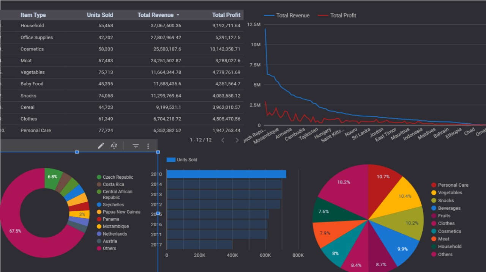
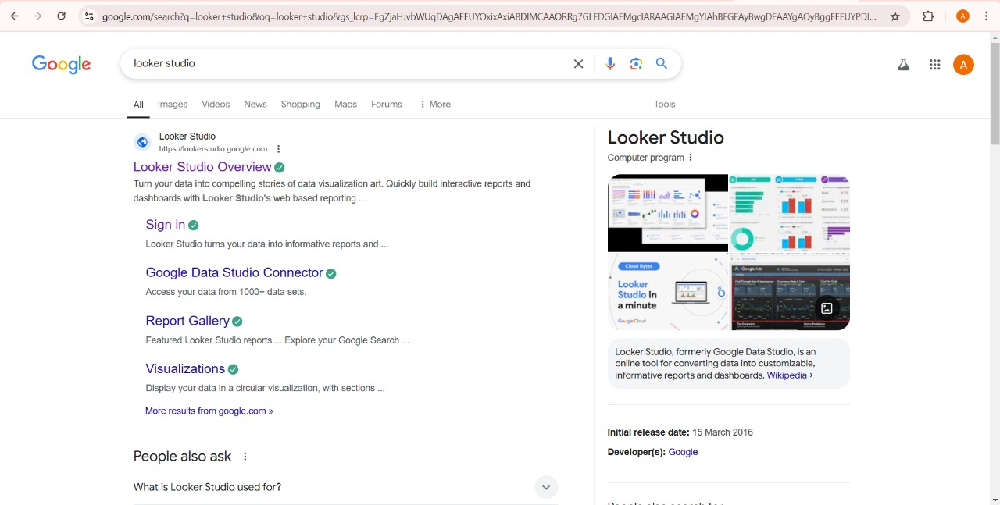
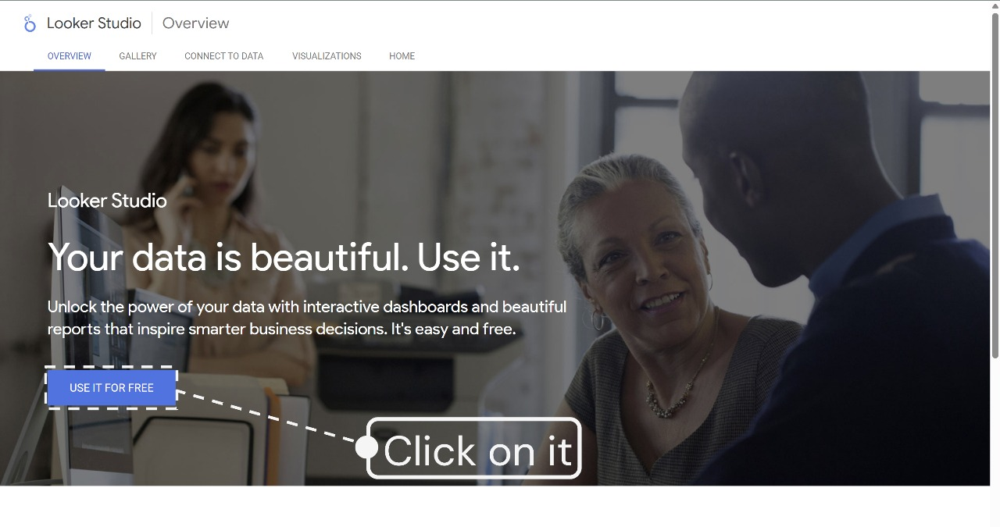
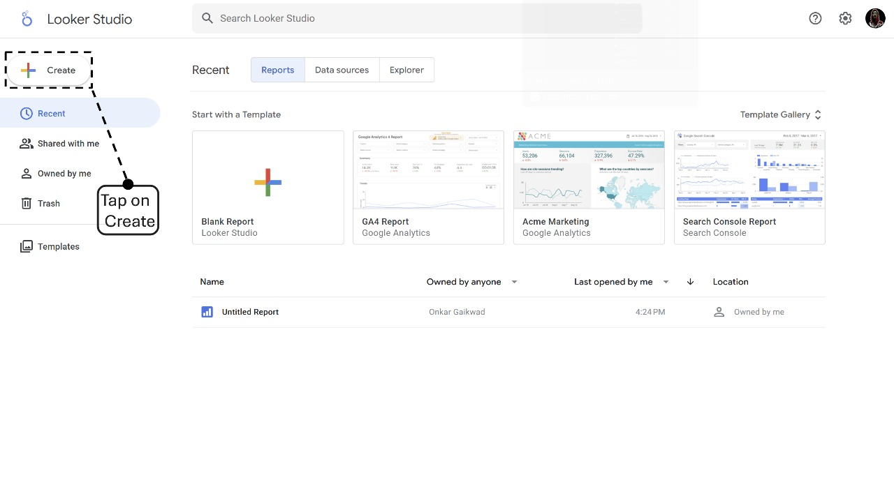
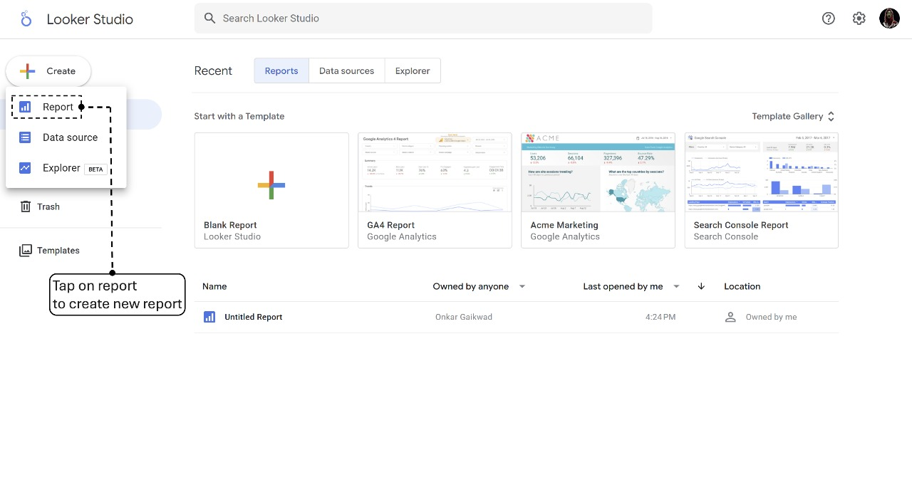
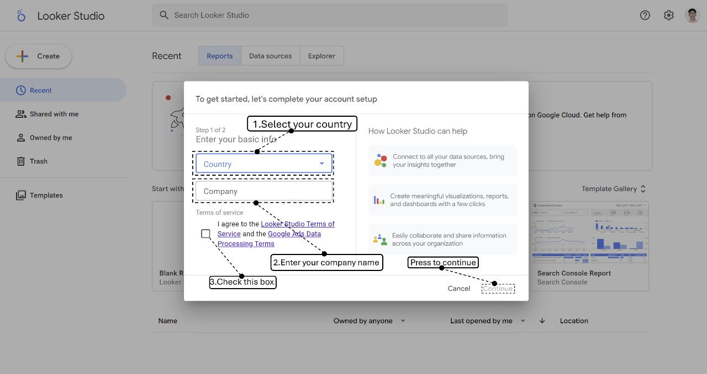
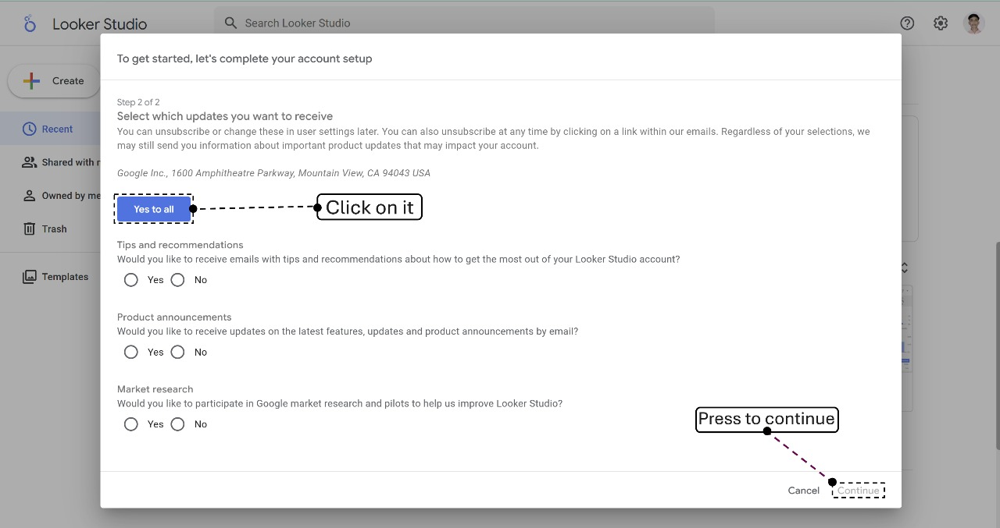
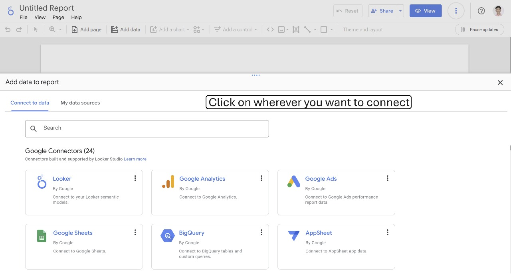

Looker Studio: The Best Cloud-Based BI & Data Visualization Tool
Looker Studio (formerly Google Data Studio) is a powerful cloud-based business intelligence (BI) tool that allows users to create interactive and shareable reports. It seamlessly integrates with multiple data sources, making data analysis more accessible and insightful.
Installation & Setup
Since Looker Studio is cloud-based, no software installation is required. Follow these steps to get started:
- Go to Looker Studio. 
- Log in using your Google account. 
- Click on "Create" -> "Report".    
- Choose a data source such as Google Analytics, BigQuery, or Google Sheets. 
- Connect and start building your reports.
Key Features
- Seamless integration with Google Analytics, BigQuery, Google Ads, and Sheets.
- Drag-and-drop interface for easy customization.
- Real-time data updates and live dashboards.
- Over 600+ data connectors available.
- Advanced filtering and custom calculations.
- Easy sharing and collaboration.
Step-by-Step Example: Creating a Dashboard
Let’s create a simple website traffic dashboard using Google Analytics.
- Open Looker Studio and create a new report.
- Select File Upload as your data source.
- Drag and drop visualizations like line charts and tables.

Real-World Use Cases
- Marketing Analytics: Track campaign performance and ROI.
- Sales Performance: Monitor revenue trends and KPIs.
- Social Media Reporting: Analyze engagement across platforms.
- Business KPI Tracking: Measure operational efficiency.
- Financial Reporting: Gain insights into financial performance.
Conclusion
Looker Studio is a must-have tool for businesses looking to visualize and analyze data effortlessly. It’s free, user-friendly, and integrates seamlessly with Google’s ecosystem.